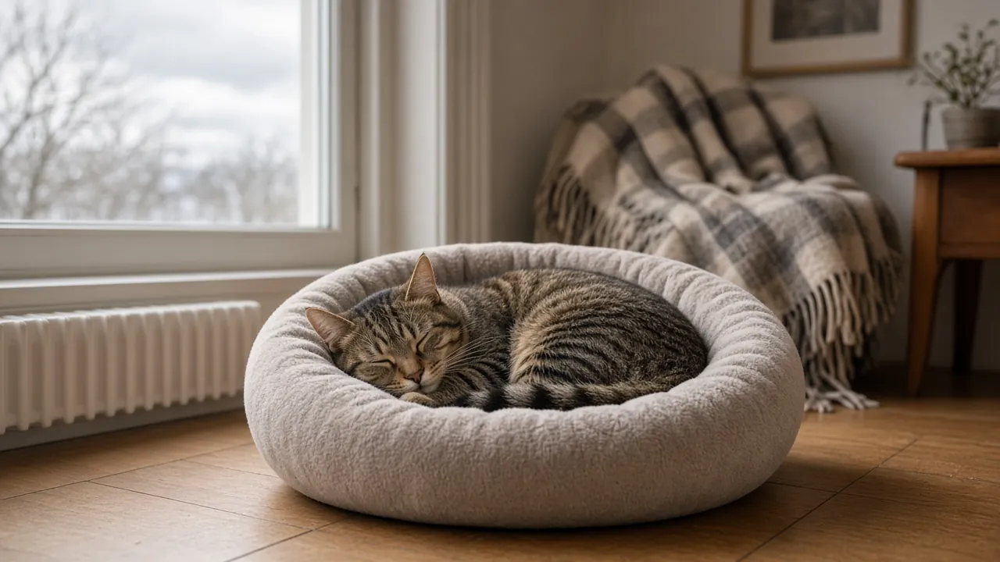
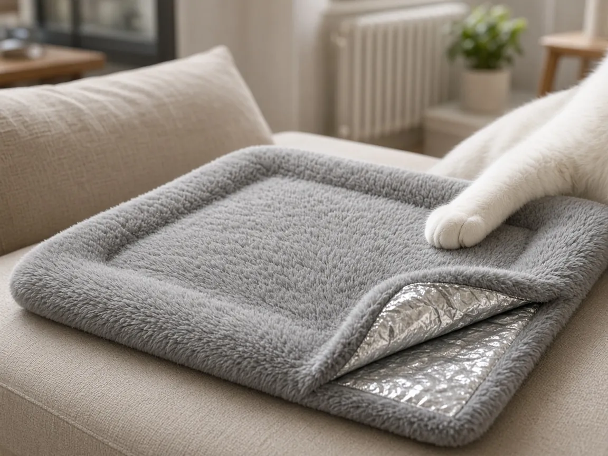
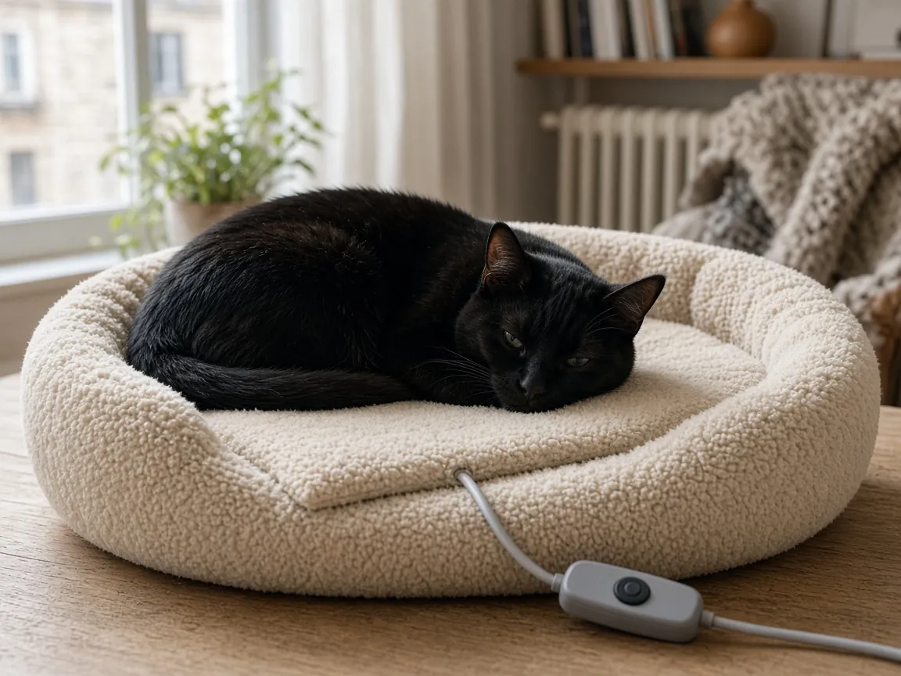
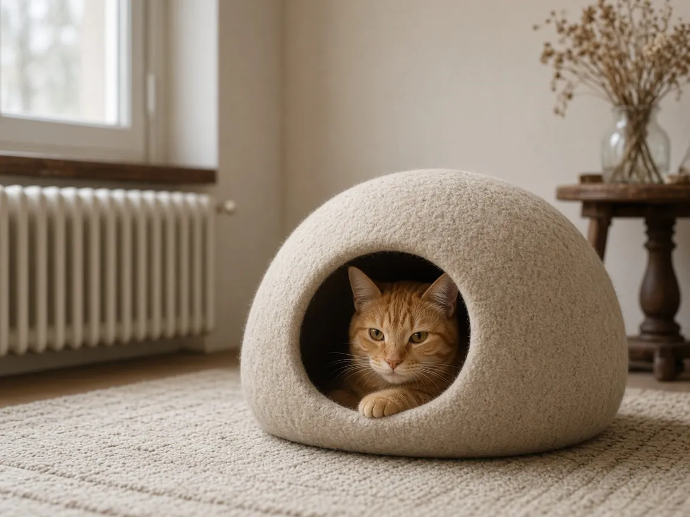

Coussin chauffant pour chat : lequel choisir pour l’hiver en appartement ?

L’hiver, ton chat d’appartement cherche les coins chauds : le radiateur, ton ordinateur portable, le dessus de la box internet. Un coussin chauffant ou un couchage isolant lui offre un endroit douillet bien à lui, sans le laisser se coller à une source de chaleur risquée. Voici les trois grands types de couchages chauds, les critères de sécurité à vérifier et nos conseils pour bien les placer dans un petit logement.
Comment choisir un coussin chauffant pour chat
- Avec ou sans électricité : un coussin autochauffant renvoie la chaleur de ton chat sans rien brancher. Un tapis électrique chauffe vraiment, mais il demande plus de précautions. Dans un appartement déjà chauffé, le premier suffit souvent.
- La basse tension : pour un modèle électrique, choisis un tapis basse tension (avec transformateur) plutôt qu’un appareil branché directement sur le secteur, et une température modérée, proche de celle du corps du chat.
- Le câble protégé : un câble gainé ou renforcé contre les morsures est indispensable, surtout avec un chaton ou un chat qui mâchouille. Fais-le passer derrière un meuble ou dans une goulotte.
- L’arrêt automatique : un thermostat et une coupure automatique en cas de surchauffe ou après un certain temps évitent que le tapis chauffe en continu.
- La housse lavable : poils, griffes et petites salissures sont inévitables. Une housse amovible qui passe en machine garde le couchage propre tout l’hiver.
- Une zone non chauffée à côté : ton chat doit pouvoir s’éloigner de la chaleur quand il en a assez. Ne chauffe jamais tout son espace de couchage, laisse-lui toujours un coin plus frais.
1. Le coussin autochauffant (sans électricité)

Le plus simple et le plus sûr au quotidien
Ce coussin cache une couche isolante, souvent réfléchissante, entre deux épaisseurs de tissu doux. Elle renvoie vers ton chat la chaleur qu’il dégage, sans câble, sans prise et sans réglage. Tu peux le poser sur le canapé, au pied du lit ou sur le rebord d’une fenêtre, et le laisser en place même quand tu pars travailler. C’est le bon choix pour un chat adulte en bonne santé dans un appartement chauffé. Prends-le assez grand pour qu’il s’y allonge, et vérifie que la housse passe en machine.
Voir sur Amazon : coussins autochauffants2. Le tapis chauffant électrique basse tension

Le plus chaud pour un logement frais
Le tapis électrique apporte une vraie source de chaleur douce. Il est utile si ton appartement reste frais, si tu baisses le chauffage la journée ou si ton chat passe son temps collé au radiateur. Choisis un modèle basse tension, avec un câble gainé contre les morsures, un thermostat et un arrêt automatique. Pose-le dans un panier ou sur une partie seulement du couchage, pour que ton chat puisse se décaler vers une zone non chauffée. Débranche-le pour laver la housse, et contrôle régulièrement le câble.
Voir sur Amazon : tapis chauffants basse tension3. Le panier igloo ou dôme feutré

Le plus douillet pour un chat qui aime se cacher
Un dôme en feutre de laine ou en tissu épais garde la chaleur à l’intérieur et protège des courants d’air, tout en offrant une cachette. Beaucoup de chats adorent s’y glisser pour dormir au calme. Il ne chauffe pas tout seul, mais tu peux y ajouter un coussin autochauffant pour plus de confort. Vérifie que l’ouverture est assez large pour ton chat et que le coussin intérieur se retire pour le lavage. Pour un tapis électrique dans un dôme, sois encore plus vigilant : l’espace est fermé, ton chat doit pouvoir sortir facilement.
Voir sur Amazon : paniers igloo et dômesQuel couchage chaud pour quelle situation ?
| Situation | Modèle conseillé | Pourquoi |
|---|---|---|
| Appartement chauffé, chat adulte | Coussin autochauffant | Aucune prise, aucun réglage |
| Logement frais ou chauffage baissé | Tapis chauffant basse tension | Vraie source de chaleur douce |
| Chat qui aime se cacher | Panier igloo feutré | Abri chaud et à l’abri des courants d’air |
| Chaton qui mâchouille les câbles | Coussin autochauffant | Pas de câble à surveiller |
| Chat âgé ou malade | Avis du vétérinaire d’abord | Besoins à évaluer au cas par cas |
Nos conseils de sécurité
- Toujours une échappatoire : place le couchage chaud à côté d’un coin non chauffé, pour que ton chat règle lui-même sa température.
- Câble hors de portée : fais passer le câble du tapis derrière un meuble ou dans une goulotte, et vérifie souvent qu’il n’est ni mâchouillé ni écrasé.
- Pas de superposition : ne recouvre pas un tapis électrique d’une couverture épaisse et ne le pose pas contre un radiateur en marche.
- Lave la housse régulièrement, en suivant les consignes du fabricant, et débranche toujours le tapis avant.
- Remplace un tapis dont le câble, la prise ou la housse est abîmé, au lieu de le réparer toi-même.
Si ton chat cherche la chaleur de façon inhabituelle, tremble, dort beaucoup plus que d’habitude ou semble raide, ne compte pas sur un coussin pour régler le problème : demande conseil à ton vétérinaire.
Quel budget prévoir ?
Le coussin autochauffant reste en général l’option la plus abordable. Les paniers igloo en feutre se situent souvent dans une gamme moyenne, selon la matière et la taille, et les tapis électriques basse tension avec thermostat et arrêt automatique coûtent un peu plus. Les prix changent souvent, vérifie-les sur la page du vendeur.
FAQ
Un coussin chauffant est-il dangereux pour un chat ?
Un modèle bien choisi et bien utilisé limite fortement les risques. Pour un tapis électrique, privilégie la basse tension, un câble gainé ou protégé contre les morsures, une température modérée et un arrêt automatique. Laisse toujours une zone non chauffée à côté pour que ton chat puisse s’éloigner s’il a trop chaud, et vérifie régulièrement l’état du câble et de la housse.
Coussin autochauffant ou tapis électrique, que choisir ?
Le coussin autochauffant ne branche rien : il renvoie la chaleur du corps de ton chat grâce à une couche isolante. C’est l’option la plus simple et la plus sûre pour un chat en bonne santé dans un appartement chauffé. Le tapis électrique basse tension apporte une vraie chaleur, utile si ton logement est frais ou si ton chat recherche beaucoup la chaleur, mais il demande plus de précautions avec le câble.
Mon chat est âgé ou malade, un coussin chauffant peut-il l’aider ?
Un couchage chaud peut le rendre plus confortable, mais ce n’est pas un soin. Si ton chat est âgé, malade, a du mal à se déplacer ou à réguler sa température, demande d’abord conseil à ton vétérinaire avant d’utiliser un tapis chauffant, et choisis un modèle dont il peut sortir facilement.
Peut-on laisser un tapis chauffant branché quand on est absent ?
Seulement si le fabricant le prévoit et si le modèle a un thermostat et un arrêt automatique. Place le câble hors de portée ou dans une gaine, ne le couvre pas d’une couverture épaisse et évite les rallonges en cascade. En cas de doute, préfère un coussin autochauffant pendant tes absences.
Où placer le couchage chaud de mon chat en appartement ?
Dans un coin calme, à l’abri des courants d’air, un peu surélevé du sol froid si possible, par exemple près d’une fenêtre fermée ou sur une étagère stable. Évite de le coller à un radiateur en marche ou à un poêle, et laisse à ton chat la possibilité de choisir entre un endroit chaud et un endroit plus frais.
Notre avis
Pour la plupart des chats d’appartement, un coussin autochauffant suffit : simple, sans câble, utilisable même quand tu n’es pas là. Si ton logement reste frais, passe à un tapis chauffant basse tension avec câble protégé et arrêt automatique, en laissant toujours une zone non chauffée. Et si ton chat adore se cacher, le panier igloo feutré lui offre un abri chaud, encore plus douillet avec un coussin autochauffant à l’intérieur. Tu pars pour les fêtes ? Vois notre guide chat seul à Noël en appartement. Pour lui offrir des coins en hauteur près de la fenêtre, vois notre sélection d’arbres à chat pour petit appartement, et pour le reste de son coin à lui, notre guide de la maison de toilette en appartement.
Liens affiliés Amazon : une commission peut être versée, sans surcoût pour toi.